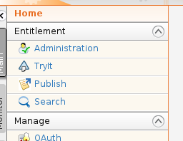
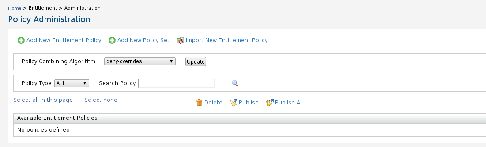
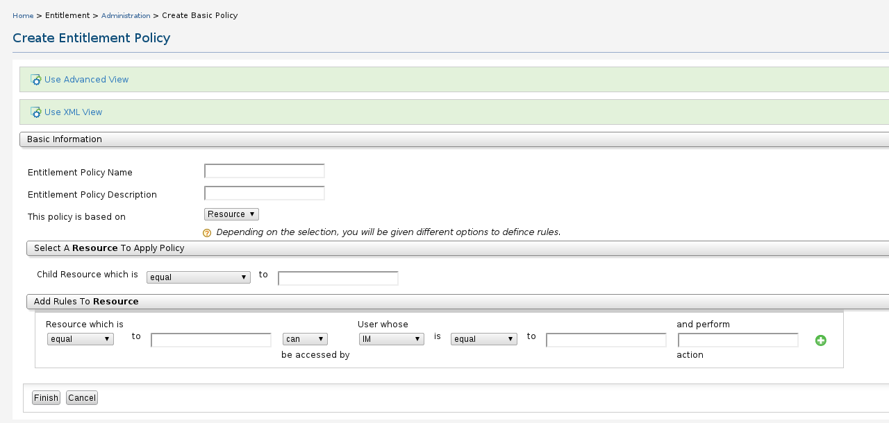
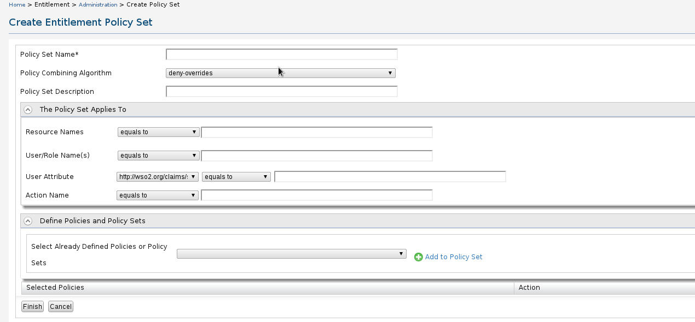
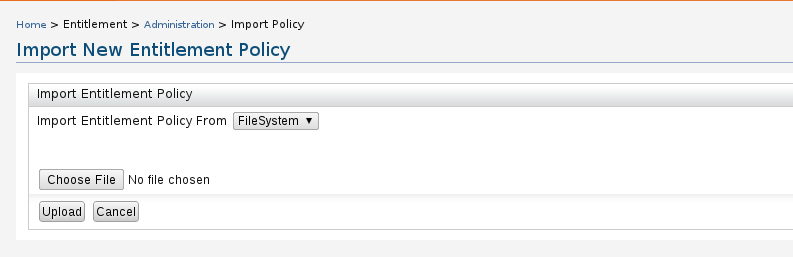
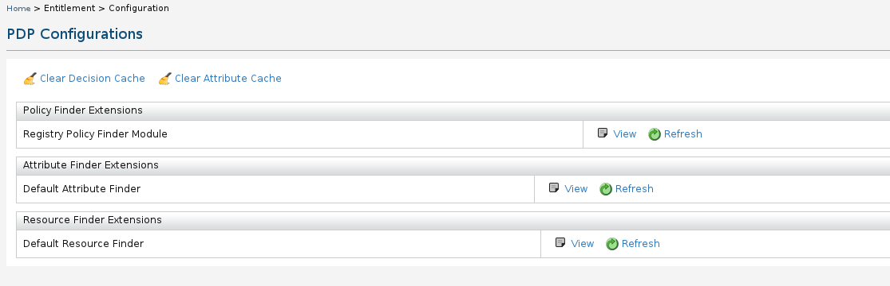
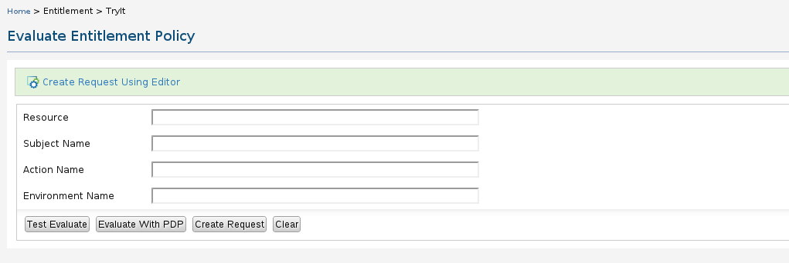
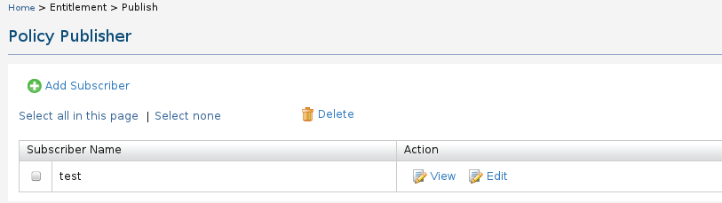
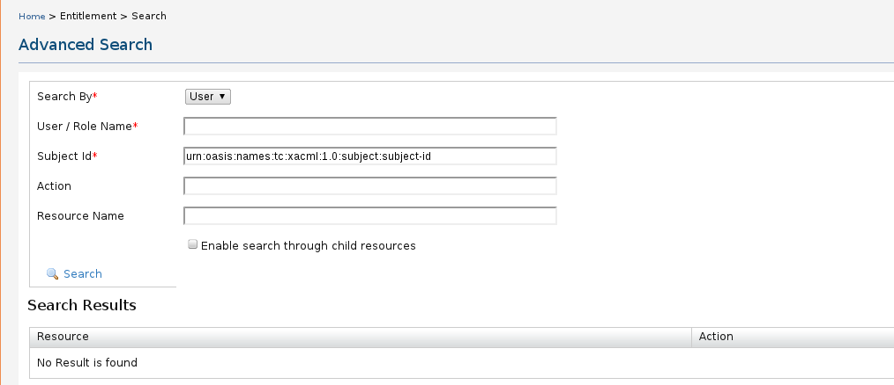

This user guide describes various configuration and management options available with entitlement management.
Use the left had Entitlement menu to configure various options such as Administration, Configuration, Tryit, Publish and Search.

Figure 1: Entitlement Management
Administration provides various policy administration operations.
Users can combine the policy using the options available in 'Policy Combining Algorithm'. The defined policies can be search using the Search Policy option. Selected policies can be published either one by one or as the whole set using 'Publish' and 'PublishAll'. The selected policies also can be deleted using 'Delete' option.

Figure 2: Policy administration
This editor can be used to create a new entitlement policy. Users can view the advance view or row XML coniguration using 'Use Advance View' and 'Use XML View' options.

Figure 3: Basic Policy Creation Wizard UI
This editor can be used to create a set of policy set.

Figure 4: Creating a policy set
This can be used to import an already existing policy in the file system of in the registry. Select the option from the drop down menu 'Import Entitlement Policy From' to import from file system of registry.

Figure 5: Import a policy set from file system or registry
This editor provides the UI requires to configure the PDP.

Figure 6: PDP configurations
You can evaluate the defined entitlement policy using this editor. You can define the request using the ling 'Create Request Using Editor'.

Figure 8: Evaluate the defined entitlement policy
The defined policy can be published using policy publisher. If there is no subscriber defined use 'Add Subscriber' to define a subscriber.

Figure 9: Publishing a policy
This UI can be used to locate defined policy. Following options can be configured in the search query.

Figure 10:
The Entitlement Management component of the WSO2 Carbon facilitates the management and control of policies defined in XACML. The key functionalities of this component includes:
External References: